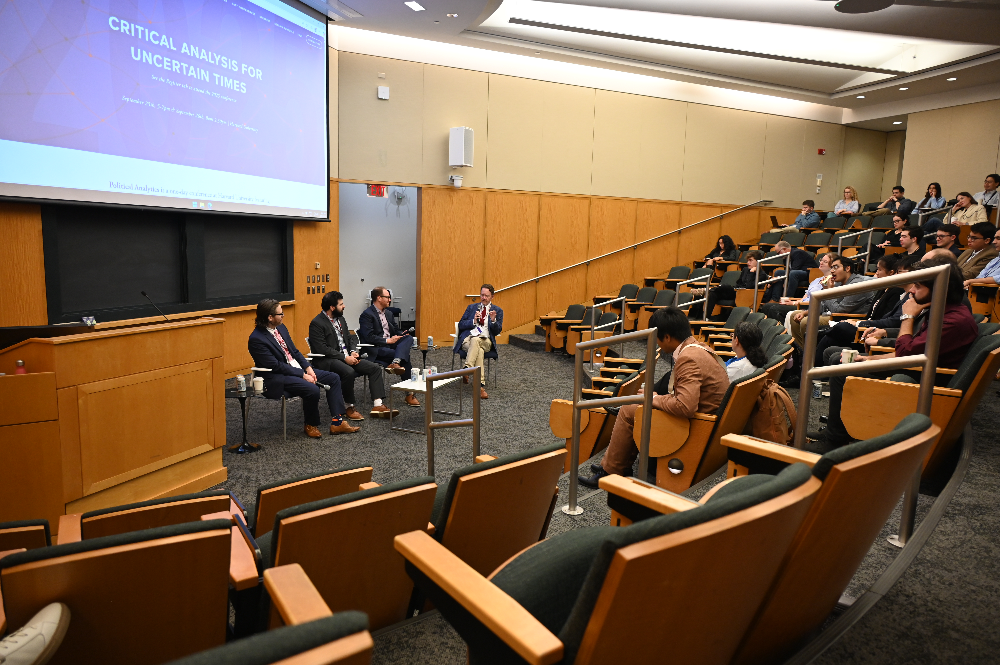

Media & Writing
Public Writing and Research Coverage
Selected commentary and coverage of Andrew Reeves’s work on presidential power, disaster politics, and democratic accountability.

Featured Panel
Andrew Reeves moderates the Election Analyst Panel at Political Analytics 2025 at Harvard University, featuring Dave Wasserman, Jacob Rubashkin, and Geoffrey Skelley.
Recent Commentary
Essays and op-eds on presidential power, disaster politics, and electoral accountability.
- Trump treats laws as obstacles, not limits − and the only real check on his rule-breaking can come from political pressure
The Conversation • May 21, 2025
- Biden and Trump will talk big at the debate, but how much could either really do?
Los Angeles Times • June 25, 2024
- Biden’s Supreme Court commission probably won’t sway public opinion
- This pandemic is a test for leaders. Voters do the grading
Saint Louis Post-Dispatch • April 1, 2020
- If Trump took responsibility for coronavirus missteps, it might actually help him
Washington Post • March 2020
- Donald Trump’s lukewarm response to Puerto Rico was pretty predictable. Here’s why
- Florida Disaster Aid Can Help Bush
- Plucking Votes From Disasters
Selected Research in the Media
- Swing-State Politics Is Rotting Our Brains and Harming Democracy
Slate • October 2024
- Trump seeks to boost presidential bid in Hurricane Helene’s wake, analysts say
Reuters • October 2024
- Columbia’s political-social climate heavily influenced by University of Missouri
Columbia Tribune • February 18, 2024
- Checking the American Presidency
Law & Liberty • January 24, 2023
- Perception matters: How fear about crime impacts presidential approval
WashU Source • April 2022
- How local and national leaders are tested by major natural disasters
NPR • October 2022
- Biden Surveys Hurricane Damage in Florida Amid Tension With Governor
Voice of America • October 2022
- Devastating Tornadoes Give Biden One Last Chance to Bridge Red-Blue Rift
The Daily Beast • December 2021
- Partisanship, the economy, and presidential accountability
- Texas’s Disaster Is Over. The Fallout Is Just Beginning
The Atlantic • February 2021
- The Economy is Collapsing. So Are Trump’s Reelection Chances
- The divide between us: Urban-rural political differences rooted in geography
- Counties that voted for the president get more in disaster relief
The Economist • October 2017
- Disaster Politics Can Get In The Way Of Disaster Preparedness
FiveThirtyEight • August 2017
- Good to Know: What is sociotropic voting in politics?
Good Authority
- Do presidents really reward the states that voted them into office?
- How Hurricane Sandy Could Matter on Election Day